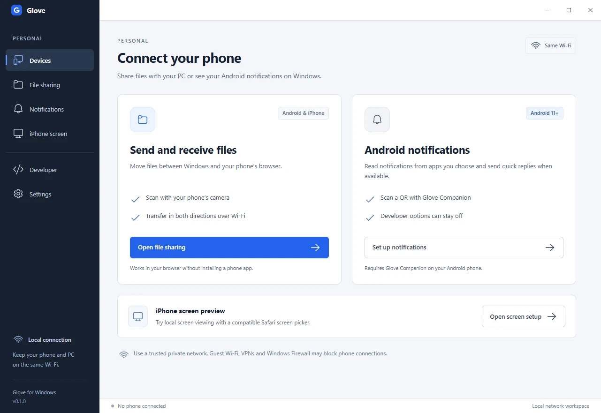

ブラウザーでファイル転送
Android または iPhone のカメラで QR コードを読み取り、ブラウザーでファイルを送受信します。スマートフォンへのアプリのインストールは不要です。信頼できるプライベート Wi‑Fi を使ってください。ファイル転送には暗号化されていないローカル HTTP を使用します。
Wi‑Fi でファイルを送受信し、PC から Android の通知を確認できます。返信に対応した通知にはその場で返信できます。アプリのテストには開発者用ワークスペースを使えます。
Windows x64 向けの無料オープンソースプレビュー · MIT
Android または iPhone のカメラで QR コードを読み取り、ブラウザーでファイルを送受信します。スマートフォンへのアプリのインストールは不要です。信頼できるプライベート Wi‑Fi を使ってください。ファイル転送には暗号化されていないローカル HTTP を使用します。
Android 11 以降で Glove Companion を開き、QR コードでペアリングします。共有するアプリを選ぶと、返信に対応した通知に PC から返信できます。開発者向けオプションを有効にする必要はありません。
開発者用ワークスペースでは、ワイヤレスデバッグと別途インストールした公式 scrcpy を使って Android の画面を表示・操作できます。ローカル MCP では、許可した Android 端末でアプリをテストできます。

ソースコードは GitHub で公開しています。プレビューを実行するには、Windows x64 と Git、Node.js 24 以降が必要です。
git clone https://github.com/arpanjot-coding/Glove.git
cd Glove
npm ci
node node_modules/electron/install.js
npm run build
npm start詳しいセットアップガイドとデモは英語です。
Android エミュレーターでペアリングと返信を検証しました。実機のカメラでの QR コード読み取りは未検証です。iPhone の画面表示は iOS 27 以降を対象とした実験機能で、画面共有に対応する Safari が必要です。iPhone 実機での動作は未確認です。